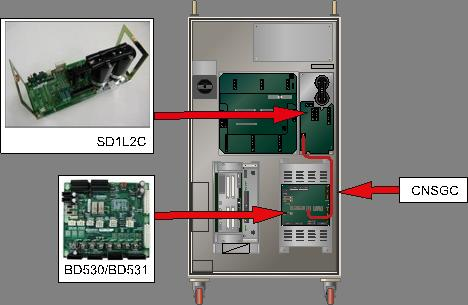
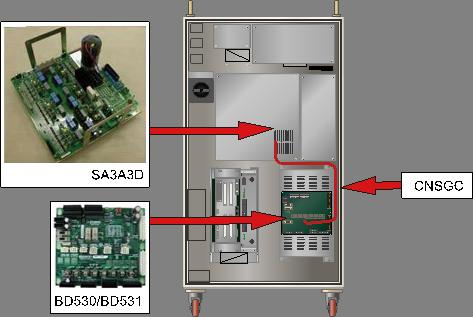
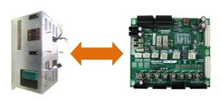
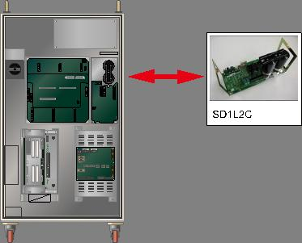

1.1.7.1. Outline
Direct current voltage (P-N) that activates a motor in a Servo activation device has been measured under the under-voltage set value.
1.1.7.2. Causes and examine methods
|
<Case: Error occurs even when the motor is off> (1) Please examine the parts that related to under-voltage error detection. n Please replace CNSGC cable and test it. n Please replace BD530/BD531 board and test it. n Replace the servo drive unit and then check it. . <Case: Error always at the moment when motor turns on> (2) Please examine power related parts. n Replace the servo drive unit and then check it. n Please examine a 3-phase voltage inside of a controller. n Please examine an input 3-phase voltage of a controller.
<Case: Error occurs at a certain step according to the robot's operation speed> (3) Please make changes on a speed of robot's operation in order to confirm an error. n Please reduce the speed of robot's operation in order to confirm an error. n Please examine an input 3-phase voltage of a controller while a robot is in operation. n Please examine an internal 3-phase voltage if an input voltage is not 220V. |
(1) Please examine the parts that related to under-voltage error detection.
AMP low-voltage error is detected by the servo drive unit when the DC power (P-N) to the servo drive unit doesn't reach the set level. Generated error will be handled by software at BD530/BD531 through a CNSGC cable

(a) Hi5-N00 controller

(b) Hi5-N30 controller
Figure 1.35 Arranging the parts related to the low voltage error
n Replacement of CNGSC and examine CNSGC
Please replace CNGSC cable with a proper one and if an error does not persist, cable connection fault caused an error. Please replace the CNGSC cable with new one and use.
n Replacement of BD530/BD531 and examine
Please replace BD530/BD531 with a proper one and if an error does not persist, the board malfunction caused an error. Please replace the BD530/BD531 with new one and use.

Figure 1.36 Replacement of BD530/BD531
n Replacement and inspection of servo drive unit
The AMP low voltage error detection module is as shown below.
Ø Hi5-N controller : Medium size SD1L2C, Small size SA3A3D
Please check the parts of a controller that currently used. Please replace it with new one to test the persistence of an error.

Figure 1.37 Replacing the module when the low voltage error occurs
(2) Please examine the components that are related to power.
AMP under-voltage occurrence error occurs when the 3-phase AC 220V that enters to the Servo Drive Unit exceeds the allowed range. Also this error may occur when recovery discharge happens at a moment of motor turns on due recovery discharge control circuit malfunction.
n Replacement and inspection of servo drive unit
Replace the AMP overcurrent error detection module and then check if the error occurs again.
An error may occur continuously due to module's internal circuit malfunction.
Ø Hi5-N controller
l Medium size Robot's diode module : SD1L2C
l Small size Robot's Servo Drive Unit: SA3A3D
n Examine the 3-phase voltage
AMP under-voltage error starts from approximately DC 142V (or 210V)
If a voltage under AC100V (or 148V) enters to the Servo Drive Unit, under-voltage error may occur when the motor turns on.
If the input voltage exceeds the allowed range, please examine according to a controller's input 3-phase voltage examination procedures and a controller's 3-phase internal voltage examination procedures.
Ø Servo Drive Unit input voltage specification: 3-phase AC 220V
Ø Allowed range when motor turns on: 198V ~ 242V
(3) Please confirm the occurrence of error according to the speed of Robot's operation.
If a robot reduce the speed rapidly, or make a high speed movement toward to gravity direction, it can cause AMP under-voltage error. Please confirm if an error occurred, or the changes of input 3-voltage supplied to Servo Drive Unit according to a speed of Robot's operation.
n Make changes on a speed of Robot's operation
If a recovery electric power that generated by Robot's operation exceeds the controller's designed specification, under-voltage error may occurs. Please reduce the speed of a step that the error occurs and re-operate in order to confirm if the error persists. If the error does not occur when the speed is reduced, please change the speed of step and use it.
n Examine the 3-phase voltage at the error occurrence step
AMP under-voltage error starts from approximately DC 142V (or 210V)
If a voltage under AC100V (or 148V) enters to the Servo Drive Unit at the error occurrence step, under-voltage error may occur when the motor turns on.
If the input voltage exceeds the allowed range, please examine according to a controller's input voltage examination procedures and a controller's 3-phase internal voltage examination procedures.
Ø Servo Drive Unit input voltage specification: 3-phase AC 220V
Ø Allowed range when motor turns on: 198V ~ 242V